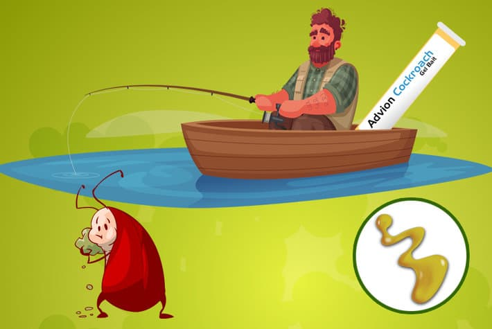

Гелевая приманка для тараканов Advion: насколько хорошо она работает?
Возможно, вы уже знаете о гелевой приманке для тараканов и ее успехе в уничтожении тараканов. Какие же основные преимущества Advion в сравнении с множеством других средств против тараканов?
Давайте посмотрим на Advion: что обещает производитель, как его использовать, как он может вам помочь и почему иногда это может не работать.
Представляем Advion CockRoach Gel Bait
Приманка Advion Cockroach Gel была впервые представлена в 2006 году. После использования ее активный ингредиент индоксакарб вступает в реакцию с ферментами тараканов, убивая их с замедленным эффектом. Приманка продается и используется в шприцах, упакована для нескольких применений и хранится до года после вскрытия.
Как работают гели-приманки для тараканов?
Вывести тараканов может быть сложно, и без дополнительных стредств это очень похоже на игру в крота. Как только вы думаете, что уничтожили тараканов, на их место приходит совершенно новый урожай.
Отчасти потому, что тараканы выносливы и быстро размножаются, а отчасти потому, что они хитрые. Чтобы убить их всех, требуется серьезный подход.
Съев гель-приманку тараканы получают большую дозу смертельного яда, а затем возвращаются к своей семье и погибают. Остальные тараканы съедают отравленное тело, травятся сами и погибают тоже. Это не очень приятный трюк, но он может изменить правила игры для людей, которым надоело играть с тараканами в игру «Убей крота».
Почему Адвион?
Чтобы было ясно, все основные бренды гелевых приманок эффективны при уничтожении тараканов. Просто они имеют разные активные ингредиенты и действуют немного по-разному.
Однако активный ингредиент геля от тараканов Advion — индоксакарб — заслуживает внимания. Не потому , что он убивает более эффективно , чем другие ингредиенты, а потому , что имеет очень хитрый метод действия, описанный выше. Тем самым, отраву получают все из популяции.
Это важно, потому что вы хотите, чтобы как можно больше тараканов съели этот продукт, и чтобы они продолжали есть, пока не получат смертельную дозу.
Таким образом, хотя Advion — не единственная высокопроизводительная приманка, которую следует учитывать, это отличный и проверенный на практике продукт.
Как использовать гель Advion CockRoach у себя дома
Для использования гелевой примвнки для тараканов Advion, вам понадобится небольшое количество. Не совки и даже не ложки — мы говорим о каплях, каплях размером с горошину , примерно по 0,5 грамма за раз.
Шприц Advion имеет тонкий наконечник, который позволяет наносить небольшое количество на поверхности, трещины и щели, которые вы обрабатываете.
Использовать гель Адвион легко:
Легкие или умеренные заражения: нанесите от 1 до 3 капель, распределив их примерно на каждые 3 погонных метра, во всех областях, где вы наблюдали активность тараканов.
Большие заражения: нанесите от 3 до 5 капель на каждые 3 погонных метра.
Совет по нанесению идеально подходит для того, чтобы попасть приманкой прямо в их любимые укрытия. В недоступные углы на кухне и в ванной, в загроможденные шкафы, крошечные дырочки и пространства.
После того, как вы нанесли правильное количество капель, все готово. Все, что вам нужно сделать, это дождаться, пока тараканы почувствуют запах и съедят приманку.
Для получения дополнительных сведений об использовании см. Наше пошаговое руководство по выбору и использованию геля для приманки от тараканов .
Сколько времени нужно, чтобы гель Advion Roach подействовал?
Если вам повезет, вы заметите разницу в активности тараканов в течение нескольких дней, а возможно, и часов. В большинстве случаев вы заметите резкую разницу в популяциях тараканов в течение первой недели.
При правильном применении, гель-приманка для тараканов Advion может уничтожить почти 100% тараканов за 2 недели до 1 месяца.
Как долго действует гель от тараканов Адвион?
Это зависит от размера заражения и условий на участках, где вы его нанесли, в среднем, гель Advion от тараканов, действует около двух недель. При более крупном заражении вам, возможно, придется чаще повторно применять Адвион.
По мере сокращения популяции, капли вашей гелевой приманки будут служить дольше и дольше. Вы все равно должны освежать их, если считаете, что они высыхают, поскольку они будут менее эффективными.
Можно ли использовать Advion Roach Killer на открытом воздухе?
Гель Advion безопасен для использования в домах, на предприятиях, на предприятиях пищевой промышленности, в зоомагазинах, супермаркетах, больницах и во многих других местах. Это универсальный, но мощный инструмент борьбы с вредителями.
И да, гелевая приманка для тараканов Advion работает как в помещении, так и на открытом воздухе. Просто следите за ним, когда используете его на улице: он может высохнуть, и его нужно будет обновить гораздо быстрее.
Общие проблемы и решения
Advion — чудо-продукт?
Нет, и редко, но бывают обстоятельства, при которых он не оправдывает ожиданий. Вот несколько советов, которые помогут вам быстро добиться успеха.
Проблема 1. Гелевая приманка Advion может быть не эффективной без комплексного плана борьбы с вредителями .
Имейте в виду, что несмотря на то, что Advion является мощным инструментом, это не решение типа «установил и забыл», и он работает лучше в комплексе многоэтапного плана борьбы с вредителями.
Помимо простого применения геля для приманки для тараканов Advion, вам нужно:
Проверить и исключить
Очень важно надеть детективные очки и тщательно осмотреть весь дом, внутри и снаружи. Только когда вы сузили места обитания тараканов, вы сможете эффективно нацеливать их и уничтожать.
Исключение включает в себя изоляцию любых точек входа, которые вы найдете снаружи, и обработку любых потенциальных мест гнездования внутри. Каждый укромный уголок и щель, каждая трещина, в которых может находиться колония тараканов, должны быть заполнены или обработаны гелем Адвион.
Устранение проблемы
Пока вы укрепляете свою защиту от захватчиков, вы также захотите уничтожить как можно больше источников еды и воды для них . Сосредоточьтесь на выработке привычки мыть посуду, менять мешок для мусора, подметать полы и вытирать столешницы и плиту.
Расширьте свой набор инструментов
Не соглашайтесь на один продукт — повысьте эффективность геля для приманки для тараканов Advion, сочетая его с другими отличными средствами для уничтожения тараканов .
Исключение включает в себя изоляцию любых точек входа, которые вы найдете снаружи, и обработку любых потенциальных мест гнездования внутри. Каждый укромный уголок и щель, каждая трещина, в которых может находиться колония тараканов, должны быть заполнены или обработаны гелем Адвион.
Вы можете убить тараканов с помощью инсектицидной пыли в тех местах, где не травите. Есть несколько превосходных продуктов известных брендов, а также натуральные продукты, такие как диатомовая земля , бура или борная кислота, которые помогут убить тараканов, которым удалось избежать приманки.
Примечание. Убедитесь, что ни один из выбранных вами продуктов не содержит репелленты — они снизят привлекательность приманки и снизят ее эффективность.
Расширьте свой набор инструментов
Не соглашайтесь на один продукт — повысьте эффективность геля для приманки для тараканов Advion, сочетая его с другими отличными средствами для уничтожения тараканов .
Исключение включает в себя изоляцию любых точек входа, которые вы найдете снаружи, и обработку любых потенциальных мест гнездования внутри. Каждый укромный уголок и щель, каждая трещина, в которых может находиться колония тараканов, должны быть заполнены или обработаны гелем Адвион.
Вы можете убить тараканов с помощью инсектицидной пыли в тех местах, где не травите. Есть несколько превосходных продуктов известных брендов, а также натуральные продукты, такие как диатомовая земля , бура или борная кислота, которые помогут убить тараканов, которым удалось избежать приманки.
Проблема 2. Отвращение к наживке
Применение слишком большого количества средства для уничтожения тараканов Advion может вызвать отвращение к приманке , когда тараканы не поедают приманку и не подходят к ней. Хуже того, они могут переехать в другую часть вашего дома, что затруднит сдерживание заражения.
Очистка с помощью химикатов или использование репеллентов также может отпугнуть тараканов или предупредить их, чтобы они держались подальше от приманки. Тогда вы не увидите желаемых результатов.
Проблема 3. Ложные тревоги: возвращение тараканов
Помните: Адвион не подействует, если его не съест таракан. Это означает, что он не убивает яйца тараканов . Даже после того, как вы думаете, что устранили нашествие тараканов, из них могут вылупиться десятки новых тараканов, что породит новую проблему с тараканами.
Опять же, важно разнообразить свои инструменты. Использование регулятора роста насекомых (IGR) вместе с гелем от тараканов Advion помогает решить эту проблему, не позволяя яйцам и нимфам достигнуть зрелого возраста.
Проблема 4. Свежесть не гарантирована
Некоторые клиенты обвиняли старый или несвежий гель в своих неутешительных результатах. Это правда, что гелевая приманка может высохнуть и потерять свою эффективность. Но истекает ли срок действия Advion?
При хранении в закрытом виде при комнатной температуре гель Advion годен до пяти лет. После открытия вы должны использовать его в течение года. Это по словам производителя Advion, Syngenta. Гелевая приманка от тараканов должна быть заменена, если ей больше года.
Источник https://cockroachfacts.com/advion-cockroach-gel-bait/